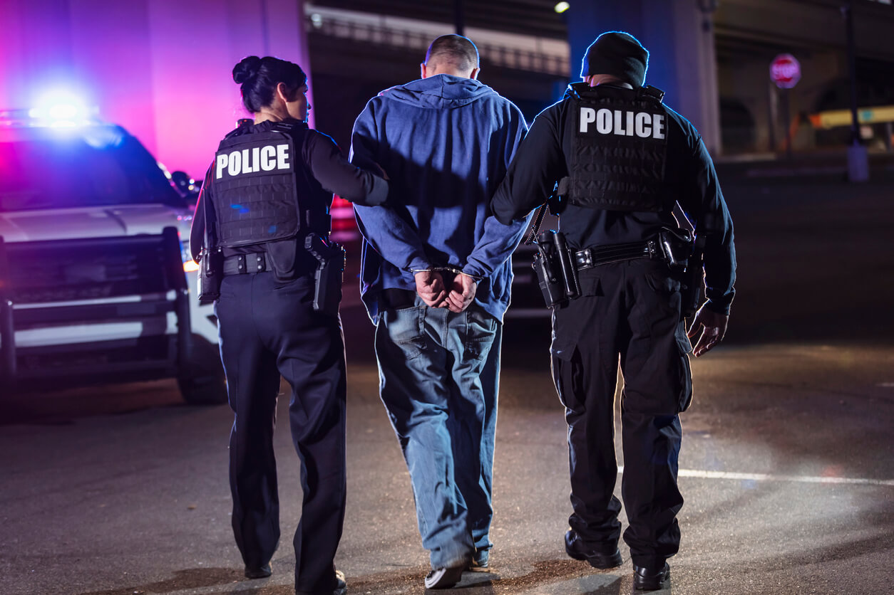
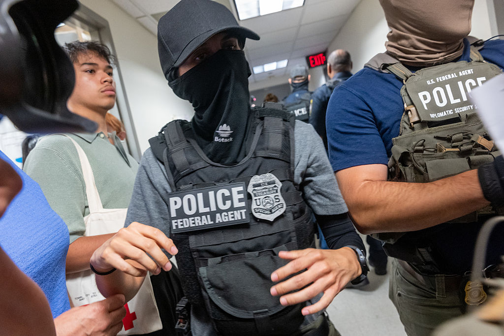
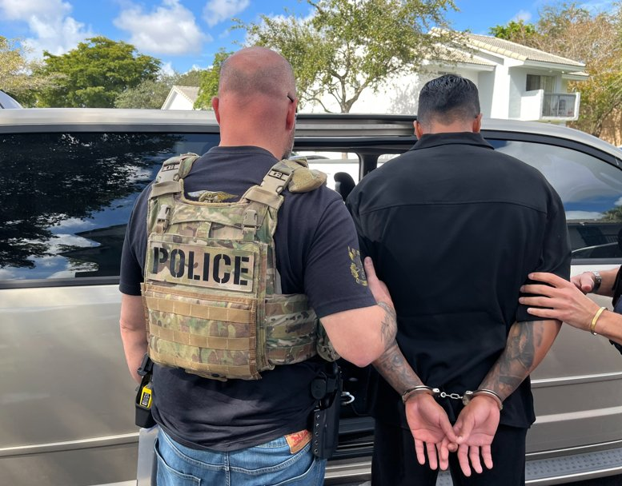
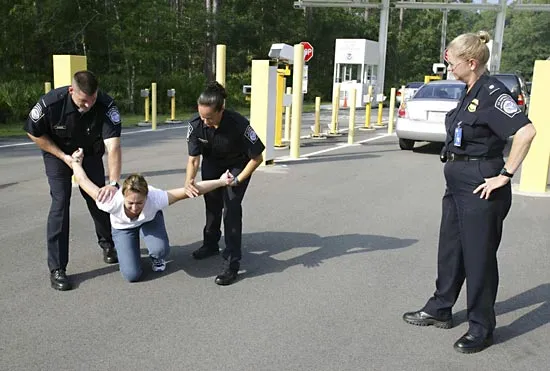

Definition of Arrest
An arrest is the act of apprehending and taking a person into custody by a law enforcement officer in response to a criminal offense. It involves the deprivation of liberty and is a formal accusation of a crime – a moment that echoes with profound consequences for all involved.
Probable Cause
Probable cause is the reasonable belief that a crime has been committed and that the person to be arrested committed it. It requires more than mere suspicion but less than evidence beyond a reasonable doubt.
Arrest Warrants
An arrest warrant is a written order from a judge authorizing law enforcement to arrest a specific person for a specific crime. It must be based on probable cause and supported by an affidavit.
Warrantless Arrests
Warrantless arrests are allowed in certain situations, such as when a crime is committed in the officer's presence, or when there is probable cause and exigent circumstances prevent obtaining a warrant.
Use of Force Standards
The use of force by police must be reasonable and proportional to the threat posed. Standards are guided by the Fourth Amendment and cases like Graham v. Connor, emphasizing objective reasonableness.
Required Court Cases
- : Established the legality of stop and frisk based on reasonable suspicion.
- : Ruled that police need a warrant to enter a home to make an arrest, absent exigent circumstances.
Arrest Statistics and Trends
Arrests are a key indicator of crime rates and law enforcement activity. According to recent FBI data, over 10 million arrests occur annually in the United States, with the majority related to drug offenses, property crimes, and violent crimes. Trends show a decline in overall arrests since the 1990s, attributed to changes in policing strategies and criminal justice reforms.
Disparities in arrest rates highlight social issues: African Americans are arrested at rates 2-3 times higher than whites for similar offenses, raising questions about bias and systemic inequalities. Understanding these statistics is crucial for advocating for fair and just policing.
Visual Ideas

Flowchart of the Arrest Process
Start -> Probable Cause -> Warrant Issued? -> Yes: Execute Warrant -> Arrest
-> No: Warrantless Arrest Allowed? -> Yes: Arrest
-> No: No Arrest

Timeline of Arrest Progression
- Incident occurs
- Police investigation
- Probable cause established
- Arrest made
- Booking and arraignment
- Court proceedings

Diagram: Probable Cause vs. Reasonable Suspicion
Probable Cause: Reasonable belief crime committed and suspect involved (higher standard)
Reasonable Suspicion: Specific, articulable facts suggesting criminal activity (lower standard, for stops)
Arrest Video Example
Video example of an Air Force lieutenant colonel being arrested, demonstrating real-world arrest procedures.
Arrest Images
